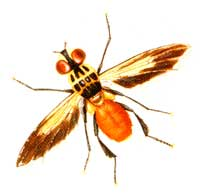

Few insects will mess with a nest of hornets. That is, few except the notorious robber - aka assassin - fly. Although only 1-inch long, these aggressive insects will take on prey as large or larger than themselves - from grasshoppers to butterflies. Robber flies can be beneficial to gardeners, with their big appetites for grasshoppers, mosquitoes and other insects, but many are generalists that will dine on whatever crosses their flight paths.
Robber flies gain their name from their ferocious manner of snatching their prey in flight. Their airborne attack also includes injecting their victim with a saliva cocktail of neurotoxic and proteolytic enzymes. The nerve toxins immobilize the hapless insect, while the digestive enzymes turn its innards to mush, which the robber fly consumes.
Most of the North American robber fly species from the family Asilidae (experts estimate more than 1,000 different species) have a long wasplike abdomen. But that's where the similarities to wasps end. All flies are in the order Diptera, which means "two-winged." This feature quickly distinguishes them from bees and wasps, which have four wings. These furry-faced creatures also have large compound eyes similar to a typical house fly and very short, three-segmented antennae.
Flies and hymenopterans (bees and wasps) also differ in their flight patterns. Because robber flies' wings beat many more times per second, they fly in straight lines and can turn on a dime. Wasps and bees move more slowly and tend to make rounded corners when they change direction.
Robber fly adults lay eggs in the summer in soil or rotten wood. When pupae emerge, they move through the soil feeding on insects and insect eggs. They overwinter as larvae at least once, and some species take up to three years to reach full development. Pupae then move to the soil surface just before emerging as adults.
-John Stuart
Mother Earth News
|
 Tom Quirk |
|
|